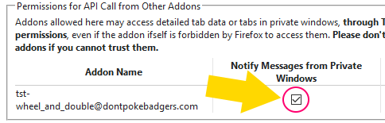

Scrolling Options
Disable scrolling to change tabs
(Default off)
Invert scrolling direction
(Default off)
Skip collapsed tabs
(Default on)
Skip discarded tabs
(Default on)
Skip cycling from end to start/start to end
(Default off)
Enable shift-scroll to scroll tab window
(Default off)
Tab window scroll speed
ms (Default 25ms)
Double Click Options
Enable Double Click to Reload
(Default on)
Double Click Speed
ms (Default 250ms)
Allow in Private Windows
If this addon is not working in private windows, you must Allow "Run in Private Windows" above AND check this box in Tree Style Tab's options, under "Extra Features via Other Addons":

Save Options